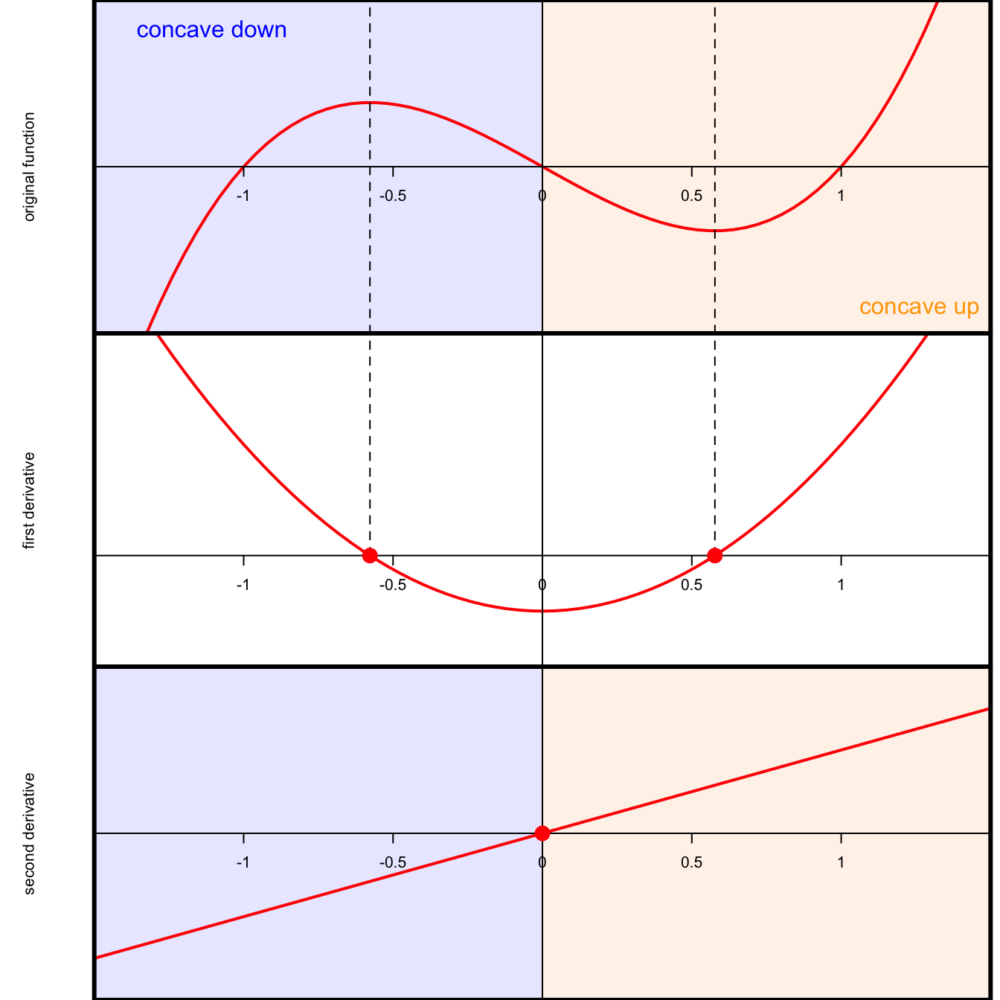

Differentiation
The derivative of a function \(f(x)\) is its instantaneous rate of change. On a graph, this corresponds to the slope of the tangent line. We will denote derivatives by \(f'(x)\) or \(\text{d}f/\text{d}x\) or something like that.
When it exists, which it doesn’t always, the derivative is defined as the limit of difference quotients:
\[ f'(x)=\lim_{\Delta x\to0}\frac{f(x+\Delta x)-f(x)}{\Delta x}. \]
So, “rise over run” as the “run” bit gets arbitrarily small.

As such, the derivative is the continuous analog to a discrete difference.
Derivative rules
| rule | function | derivative |
|---|---|---|
| constant | \(h(x)=c\) | \(h'(x)=0\) |
| scaling | \(h(x)=c\cdot f(x)\) | \(h'(x)=c\cdot f'(x)\) |
| sum/difference | \(h(x)=f(x)\pm g(x)\) | \(h'(x)=f'(x)\pm g'(x)\) |
| linearity | \(h(x)=a\cdot f(x)\pm b\cdot g(x)\) | \(h'(x)=a\cdot f'(x)\pm b\cdot g'(x)\) |
| power | \(h(x)=x^n\) | \(h'(x)=nx^{n-1}\) |
| product | \(h(x)=f(x)g(x)\) | \(h'(x)=f'(x)g(x)+f(x)g'(x)\) |
| quotient | \(h(x)=f(x)/g(x)\) | \(h'(x)=\frac{f'(x)g(x)+f(x)g'(x)}{g(x)^2}\) |
| chain | \(h(x)=f(g(x))\) | \(h'(x)=f'(g(x))g'(x)\) |
| exponential | \(h(x)=e^x\) | \(h'(x)=e^x\) |
| natural log | \(h(x)=\ln(x)\) | \(h'(x)=1/x\) |
Curvature
If you take the derivative of \(f\), you get the first derivative \(f'\). If you take the derivative of the derivative, you get the second derivative \(f''\). The derivative of the derivative of the derivative is the third derivative \(f'''\), and on and on. But let’s focus on the first two. The derivatives contain information about the shape of the original function:
- the first derivative tells you if the function is increasing or decreasing;
- if \(f'(x)>0\), then \(f\) is increasing at \(x\);
- if \(f'(x)<0\), then \(f\) is decreasing at \(x\);
- if \(f'(x)=0\), then \(f\) is not changing at \(x\);
- if the second derivative tells you about the curvature (aka concavity) of the function:
- if \(f''(x)>0\), then \(f\) is concave up (\(\cup\), smiling) at \(x\);
- if \(f''(x)<0\), then \(f\) is concave down (\(\cap\), frowning) at \(x\).
Here is an illustration with the function \(f(x)=x^3-x\) and its derivatives \(f'(x)=3x^2-1\) and \(f''(x)=6x\) (power rule!):
When the first derivative changes sign (at \(x^\star=\pm1/\sqrt{3}\)), that corresponds to the original function switching from increasing to decreasing, or vice versa. When the second derivative changes sign (at \(x_0=0\)), that corresponds to the original function switching from concave down (frowning) to concave up (smiling). A point like \(x=0\) in this example where the concavity changes is called an inflection point. If \(x_0\) is an inflection point, then that means it’s also a root of the second derivative: \(f''(x_0)=0\). In order for the second derivative to change sign, it has to cross the \(x\)-axis.
However, just because the second derivative is zero doesn’t mean there was inflection. Consider \(f(x)=x^4\) and its derivatives \(f'(x)=4x^3\) and \(f''(x)=12x^2\):
In this case, we see that while the second derivative has a root at zero, it doesn’t actually cross the \(x\)-axis. It’s just swooping down and giving it a gentle lil’ smooch from above. Correspondingly, we see that the original function never changes concavity. Therefore, we say that \(f''=0\) is a necessary but not sufficient condition for the original \(f\) to change concavity. To verify, you must actually check that the second derivative has different sign before and after the root. Bummer!
Optimization
Differentiation is useful when we seek to optimize a function. That is, find where it has local maxima or minima. For purposes of illustration, I’ll focus on maxima. Formally, given an objective function \(f\), we seek to find the \(x\)-values at which \(f\) has a maximum:
\[ \underset{x\in\mathbb{R}}{\arg\max}\,f(x). \]
Notice that I did not write \(\max f(x)\). In this class, it turns out that we will seldom care about the actual largest value that the function obtains. Instead, we care only for where that value occurs. So we are interested in the maximizer; the location of the maximum; the \(x\)-value that does the maximizing. Hence, argmax and not max. Here’s an illustration:

Inspecting this picture, we notice that the maximum corresponds to a point where the derivative (slope of the tangent line) is zero. So to optimize \(f\), perhaps we can compute its first derivative, set it equal to 0, and solve.
\[ \begin{aligned} f'(x) = -2x+6&=0 \quad \implies \quad x^\star=3. \end{aligned} \]
A point like \(x^\star\) in this example is called a critical point. A critical point may be the location of a maximum, but you have to check. If you recall the example in Figure 1, there are two critical points \(x^\star = \pm 1/\sqrt{3}\), but they correspond to different things: one is a minimum and one is a maximum. In order to classify the critical points as maximizers or minimizers, you perform the second derivative test:
- if \(f'(x^\star)=0\) and \(f''(x^\star)<0\), then \(x^\star\) is a maximizer;
- if \(f'(x^\star)=0\) and \(f''(x^\star)>0\), then \(x^\star\) is a minimizer;
- if \(f'(x^\star)=0\) and \(f''(x^\star)=0\), then the test is inconclusive.